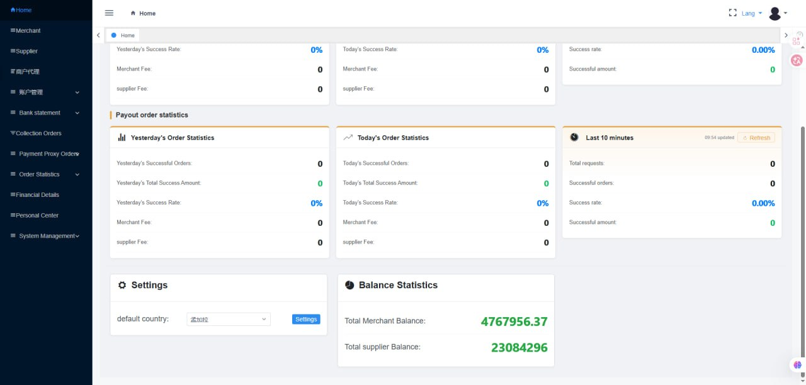
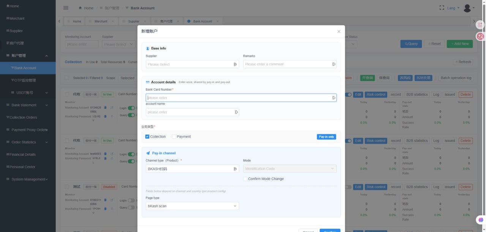
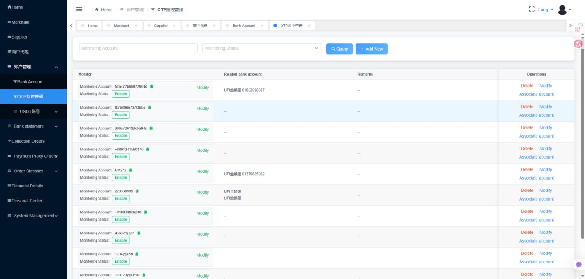
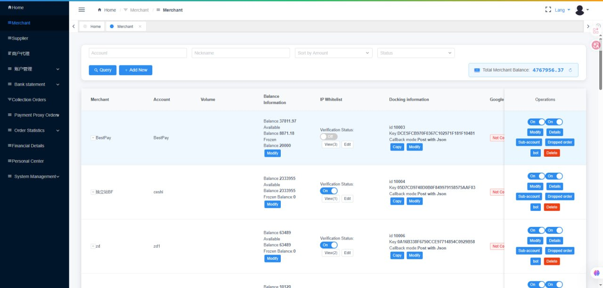
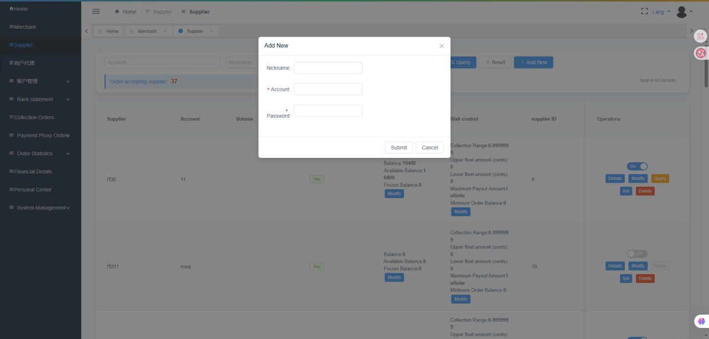
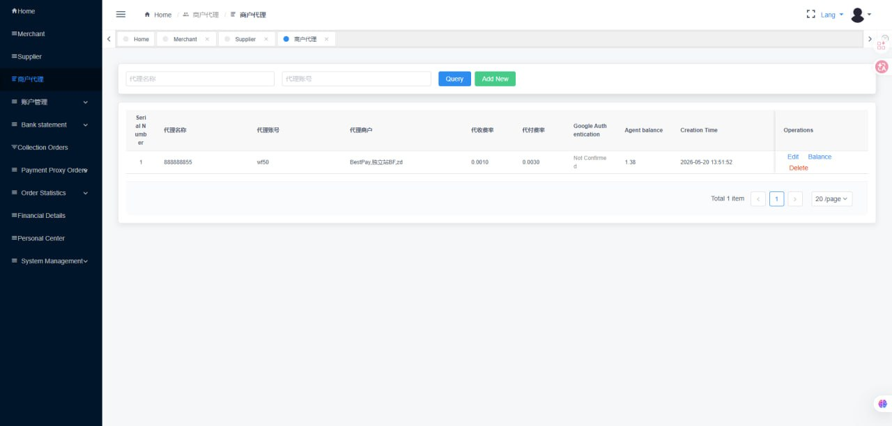

Before setting up Bangladesh payment channels, you must first switch the system's default country to Bangladesh.
1Go to Home page → scroll down to the "Settings" section at the bottom
2In the "default country" dropdown, type 孟加拉 (Bangladesh) and select it
3Click the "Settings" button → Confirm the change

Changing the default country affects which payment channels are available system-wide. After switching to Bangladesh, Channel type dropdowns will show bKash, Nagad, etc. instead of UPI options.
1. System Overview
TatataPay is a fully-managed payment gateway system designed for iGaming operators and PSPs. This guide covers the setup and operation of Bangladesh payment channels — including bKash, Nagad, and Rocket.
Key Roles
Role
Description
Responsibility
Payment Company (You)
System operator
Manage the platform, process orders, monitor funds
After switching to Bangladesh, the Bank Account list shows cards with BKASH转码 and Nagad转码 channel types, with bKash scan and Nagad scan checkout counters.
📸 Add New Account Form (Bangladesh)

The form shows: Base info (Supplier, Remarks) → Account details (Bank Card Number, account name) → 业务类型 (Collection/Payment) → Pay in channel (Channel type: BKASH转码, Mode: Identification Code, Page type: bKash scan).
Multiple cards can share the same monitoring account. You can also modify the monitoring account independently.
4. Setting Up OTP Monitoring
OTP monitoring captures SMS verification codes from the bKash/Nagad account's phone and automatically forwards them to the system backend. This is essential for automated transaction verification.
Prerequisites
The phone that receives bKash/Nagad OTP SMS
Our monitoring app installed on that phone
Monitoring account credentials (generated when you added the card)
Setup Steps
1Install the monitoring app on the phone linked to the bKash/Nagad account
2Grant all required permissions — check that all permission indicators are green (top-left of the app). If not, tap "Get Permissions" (top-right).
Note: Include https:// prefix. Do NOT add a trailing slash /
4Tap Login — the app will start capturing OTP messages automatically
Once connected, any bKash/Nagad OTP received on this phone will be automatically forwarded to the system backend for transaction verification.
📸 OTP Monitoring Management

The OTP监控管理 (OTP Monitoring Management) page shows all monitoring accounts, their status (Enable/Disable), related bank accounts, and operations (Delete, Modify, Associate account).
Template to Send to Local Operator
Please install the monitoring app and log in with these credentials:
Monitoring account: XXXXXXXX
Login password: XXXXXXXX
Server configuration: https://your-domain.com
After logging in, make sure all permission indicators are green.
The app will automatically capture and upload OTP codes.
5. Setting Up Transaction Monitoring
Transaction monitoring automatically captures bKash/Nagad transaction records and uploads them to the backend for automatic order matching.
How It Works
A customer makes a payment to your bKash/Nagad account
The monitoring system detects the incoming transaction
Transaction details are uploaded to the backend
The system automatically matches the transaction to the corresponding order
If matched → order marked as Success, callback sent to merchant
If not matched → flagged for Manual Review
Matching Methods
Method
Description
Recommended
Amount Matching
Match by payment amount
⚠️ Basic
Identification Code + Amount
Unique code embedded in payment + amount
✅ Recommended
Payment Info + Amount
Customer-submitted info + amount
⚠️ Backup
6. Merchant Onboarding
1Create Merchant Account: Go to Merchant Management → Add Merchant → Enter nickname, username, password → Submit
2Copy Integration Credentials: Click the "Integration Info" copy button → Send to merchant's technical team
3Configure Merchant Settings:
Fee Rate: e.g., 0.02 = 2% per transaction
Fixed Fee: Per-transaction fixed fee (mainly for payouts)
IP Whitelist: Add merchant's server IP for security (format: 182.234.96.152,47.232.188.71)
Account Allocation: Assign specific code merchants to this merchant
Bot Group ID: For Telegram accounting bot integration
4Merchant integrates via API using the provided documentation. Our team assists with any technical issues during integration.
📸 Merchant List

The Merchant page shows all merchants with their account, balance, IP whitelist status, docking information (API Key, Callback mode), and operations (Modify, Details, Sub-account, Dropped order, bot, Delete).
Suppliers (code merchants / account providers) are managed here. Each supplier shows their account, balance, risk control settings, and order acceptance status.
📸 Add New Supplier

Same as merchant: Nickname, Account, Password → Submit.
📸 Merchant Agent (商户代理)

Merchant Agents can manage multiple merchants. Shows agent name, account, associated merchants, collection/payout fee rates, and agent balance.